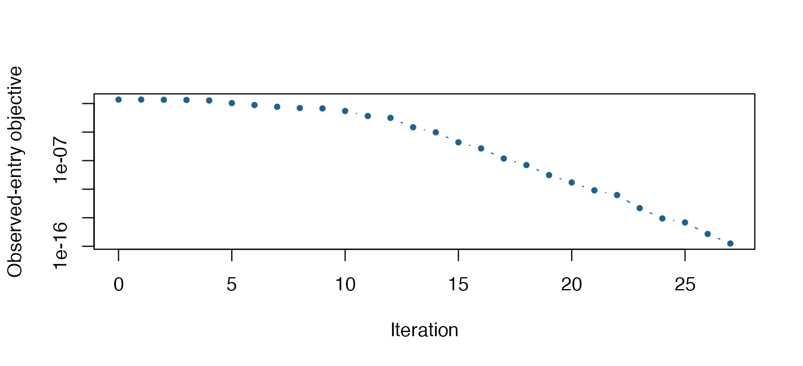

Complete a partially observed low-rank matrix
Source:vignettes/articles/example-matrix-completion.Rmd
example-matrix-completion.RmdSuppose only some entries of a matrix are measured, but the complete matrix has rank two. We can fit the observed entries while keeping every iterate on the fixed-rank manifold. This example uses a small, noiseless synthetic matrix so that we can also measure error on the entries hidden from the solver.
The compact representation stores a point as three factors,
U, S, and V, representing
.
It keeps the embedded Frobenius metric while avoiding a full matrix
allocation when evaluating the observed-entry objective. See Compact low-rank optimization for the
point and tangent representation contracts.
Generate observations
We create a rank-two matrix and observe 80% of its entries. The random seeds make both the matrix and the observation pattern reproducible. All tensors use double precision on the CPU; this also makes the example portable across machines used to build the documentation.
n_rows <- 24
n_columns <- 18
M <- manifold.fixedrank(n_rows, n_columns, 2, representation = "svd")
truth <- riem.random(M, device = "cpu", dtype = torch_float64())
truth$S <- torch_diag(torch_tensor(c(12, 8), dtype = torch_float64()))
entries <- expand.grid(row = seq_len(n_rows), column = seq_len(n_columns))
observed <- sort(sample(nrow(entries), floor(0.8 * nrow(entries))))
observations <- list(
rows = entries$row[observed],
columns = entries$column[observed],
values = riem.materialize(
M, truth, entries$row[observed], entries$column[observed]
)
)
length(observed)
#> [1] 345The row and column vectors contain paired, one-based entry indices.
riem.materialize() returns just those entries when the
indices are supplied. The unobserved values are not passed to the
optimization problem.
Fit the observed entries
We minimize the mean squared observed residual divided by two.
Registering the observations through data lets riemtorch
prepare their tensors on the device selected for the solve. The loss
depends on the represented matrix, so it is unchanged by an equivalent
choice of compact factors.
problem <- riem.problem(
M,
function(x, data) {
residual <- riem.materialize(M, x, data$rows, data$columns) - data$values
residual$square()$mean() / 2
},
data = observations
)
initial <- riem.random(M, device = "cpu", dtype = torch_float64())
fit <- riem.optimize(
problem, initial, method = "lbfgs",
control = list(max_iterations = 150, gradient_tolerance = 1e-9),
device = "cpu"
)
fit
#> <riem_fit> lbfgs on fixedrank
#> Objective: 1.9705172e-16 | gradient norm: 8.164e-10
#> Termination: converged_gradient | iterations: 27
riem.belongs(M, fit$point)
#> [1] TRUEThe initial point is independent of the hidden matrix. For an
application, device = "cpu" explicitly overrides automatic
device selection. Omitting this argument lets riemtorch select a
compatible device while preserving the initial point’s precision;
device = "cuda:0" explicitly requests a GPU. See Applications and devices for
the selection rules and device diagnostics.
Inspect recovery
Only now do we materialize the complete fitted matrix for evaluation and plotting. The held-out RMSE measures prediction on entries that were not in the objective. The relative Frobenius error measures recovery of the entire matrix and uses the known synthetic truth.
actual <- as.matrix(riem.materialize(M, truth))
recovered <- as.matrix(riem.materialize(M, fit$point))
error <- recovered - actual
data.frame(
observed_rmse = sqrt(mean(error[observed]^2)),
held_out_rmse = sqrt(mean(error[-observed]^2)),
relative_frobenius_error = sqrt(sum(error^2) / sum(actual^2))
)
#> observed_rmse held_out_rmse relative_frobenius_error
#> 1 1.985204e-08 4.54268e-08 3.894636e-08
partial <- actual
partial[-observed] <- NA_real_
limits <- range(actual, recovered)
old_par <- par(mfrow = c(1, 3), mar = c(3.5, 3.5, 2, 1))
for (panel in list(
list(values = actual, title = "True matrix"),
list(values = partial, title = "80% observed"),
list(values = recovered, title = "Recovered matrix")
)) {
image(
seq_len(n_columns), seq_len(n_rows), t(panel$values),
col = hcl.colors(60, "Blue-Red 3"), zlim = limits,
xlab = "Column", ylab = "Row", main = panel$title
)
}
The true matrix, its observed entries (white cells are missing), and the recovered matrix. All panels share the same color scale.
par(old_par)
iterations <- vapply(fit$history, function(state) state$iteration, numeric(1))
objectives <- vapply(fit$history, function(state) state$objective, numeric(1))
plot(
iterations, pmax(objectives, .Machine$double.xmin),
type = "b", pch = 19, cex = 0.6, log = "y", col = "#21618C",
xlab = "Iteration", ylab = "Observed-entry objective"
)
Observed-entry objective along the accepted solver trajectory.
Interpret the result
This well-observed noiseless example is chosen to recover reliably. A low training error alone does not establish that missing entries are identifiable. Recovery depends on the observation pattern, matrix structure, chosen rank, and initialization. Fixed-rank optimization is nonconvex, so a small gradient does not certify a global optimum. Real applications should examine held-out error, compare plausible ranks, and consider multiple initializations.
The compact representation currently supports first-order optimization of one point at a time. Its small-matrix retractions and entry extraction reduce storage, but the number of observations still determines the loss evaluation cost. Automatic Hessians are not advertised for this representation.
The air-quality application extends this workflow to genuinely missing measurements, training-only preprocessing, regularization, and held-out evaluation against a simple baseline.